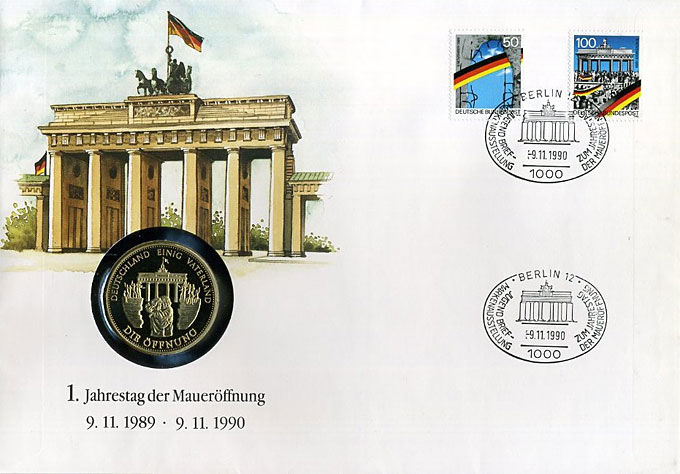
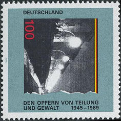
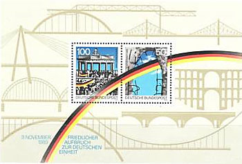
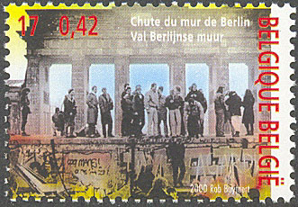
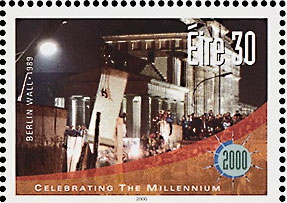
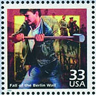
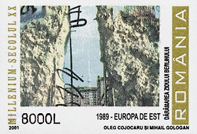
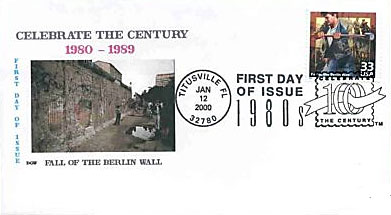
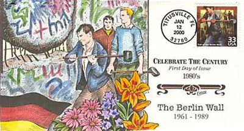
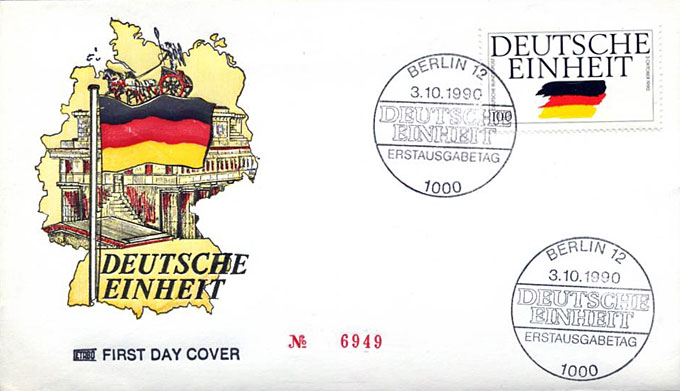

On August 23, 1989, communist Hungary removed its border restrictions with Austria, and in September more than 13,000 East German tourists in Hungary escaped to Austria. Mass demonstrations against the government in East Germany began in October 1989. The long-time leader of East Germany, Erich Honecker, resigned on October 18, 1989, and was replaced by Egon Krenz a few days later. Honecker had predicted in January of that year that the wall would stand for a "hundred more years" if the conditions which had caused its construction did not change.

Germany 1990. 1st anniversary of the opening of the Berlin WallProtest demonstrations broke out all over East Germany in September 1989. Initially, they were of people wanting to leave to the West, chanting "Wir wollen raus!" ("We want out!"). Then protestors began to chant "Wir bleiben hier", ("We're staying here!"). This was the start of what East Germans generally call the "Peaceful Revolution" of late 1989. By November 4, 1989, the protests had swelled significantly, with a million people gathered that day in Alexanderplatz in East Berlin.


Germany 1995. To victims of division and force Germany 1990. Fall of the Berlin Wall 
Belgium 2000. Fall of the Berlin Wall Meanwhile the wave of refugees leaving East Germany for the West had increased and had found its way through Czechoslovakia, tolerated by the new Krenz government and in agreement with the communist Czechoslovak government. In order to ease the complications, the politburo led by Krenz decided on November 9, 1989, to allow refugees to exit directly through crossing points between East Germany and West Germany, including West Berlin.


Eire 2000. Fall of the Berlin Wall. USA 2000. Fall of the Berlin Wall. 
Romania 2001. Destruction of the Berlin Wall Tens of thousands of East Berliners ... flooded the checkpoints in the Wall demanding entry into West Berlin. The surprised and overwhelmed border guards made many hectic telephone calls to their superiors, but it became clear that there was no one among the East German authorities who would dare to take personal responsibility for issuing orders to use lethal force, so there was no way for the vastly outnumbered soldiers to hold back the huge crowd of East German citizens. In face of the growing crowd, the guards finally yielded, opening the checkpoints and allowing people through with little or no identity checking.

Ecstatic East Berliners were soon greeted by West Berliners on the other side in a celebratory atmosphere. November 9 is thus considered the date the Wall fell. In the days and weeks that followed, people came to the wall with sledgehammers in order to chip off souvenirs, demolishing lengthy parts of it in the process. These people were nicknamed "Mauerspechte" (wall woodpeckers).

The East German regime announced the opening of ten new border crossings the following weekend, including some in symbolic locations (Potsdamer Platz, Glienicker Brücke, Bernauer Straße). Crowds on both sides waited there for hours, cheering at the bulldozers who took parts of the Wall away to reinstate old roads. Photos and television footage of these events is sometimes mislabelled "dismantling of the Wall", even though it was merely the construction of new crossings. New border crossings continued to be opened through summer 1990, including the Brandenburg Gate on December 22, 1989. Source

Germany, October 3, 1990. German unity.The fall of the Wall was the first step toward German reunification, which was formally concluded on October 3, 1990.
Created: 09/01/08. Revised: 1/10/2024.
Copyright © 2008 - 2024 by Victor Manta, Switzerland/USA.
All rights reserved worldwide.